Overview
ProcessMaker uses conditions in a number of different situations to determine whether execution happens or not. Conditions evaluate to either true or false, based upon the Boolean logic found in PHP. Conditions can be defined for Steps (DynaForms, Input Documents, Output Documents, and Triggers), Evaluation and Parallel Gateways evaluation routing rules, and Events.
In addition, conditions can be created to show or hide elements in a DynaForm using JavaScript's Boolean logic.
Understanding Conditions
Conditions in ProcessMaker are based upon Boolean Logic, which is the idea that any expression can be evaluated to either a value of True or False. If the expression is True, then execution will occur. If it is False, no execution will occur. In ProcessMaker, a condition can take many forms. These are all valid types of conditions:
| Condition | Description |
|---|---|
| 3124.5 | A floating point number which evaluates to true |
| "hello world" | A string which evaluates to true |
| False | A boolean value of false |
| @@ContactType | A case variable |
| @%Total == 400 | Equality comparison with an integer |
| "check" === @@PaymentType | Equality comparison between strings |
| @@USR_USERNAME != "admin" | Non-equality comparison between string |
| @#InvoiceAmount > 100.00 | Greater than comparison with a floating point number |
| max(@#Invoice, @#TotalBill) < 1000 | Less than comparison with the return value from a function |
| (@#Price - @#Discount) * @%Quantity <= 3000 | Less than comparison to a mathematical operation with () to prioritize elements |
| (@#Amount >= 5000.00 and @@priority == "high") | Two comparisons joined by a Boolean AND |
| ((@@contact=="sales" or @@contact=="lead") and !(@@priority=="high")) |
Logical OR, AND, NOT with () to prioritize elements |
Variables in Conditions
Conditions can contain system or case variables, which are preceded by an @ sign and then another symbol which indicates how the variable is parsed:
| Variable Type | Description |
| @@variable_name | The variable will be parsed as string type. If originally another type, it will be converted to a string. So -1, 0 and 12.45 become "-1", "0" and "12.45", respectively. |
| @%variable_name | The variable will be parsed as integer type (a whole number). If originally another type, it will be converted to an integer. A real number will be converted to a whole number, so 12.45 becomes 12. A string which contains numbers will be converted to a whole number, so "655" and "34.19" become 655 and 34, respectively. |
| @#variable_name | The variable will be parsed as float type (a real number with decimals). |
| @?variable_name | The variable will be parsed as a string used in a URL. The string is transformed with PHP's encodeurl(), so all spaces become pluses (+) and all characters which aren't letters, except underscores (_), are replaced by a % followed by a 2 hexadecimal digits, so that the string can be used in posted data to/from WWW forms. |
| @$variable_name | The variable will be parsed as a string for use in an SQL query. Any single quotation marks (') will be preceded by a backslash. So "I'm telling you it's a boy!" becomes "I\'m telling you it\'s a boy!". |
| @=variable_name | The variable will not be changed and is parsed as its original type. |
Case variables are variables which hold information about a case and they are created either when a field in a DynaForm is submitted or when defined in a trigger. Variables names must start with either a letter or underscore and they are case sensitive, so @@_myvar, @@myvar, @@MyVar, @@MYVAR, and @@myvar2 are five different variables. Make sure to spell case variables exactly like their field name in DynaForms or how they were defined in a trigger.
Conditions can NOT contain local or global PHP variables which were defined in triggers, but they can use PHP's superglobal variables, such as $_SERVER['SERVER_ADDR'] and $_ENV['PATH'].
If a condition only contains a variable (and nothing else), then the value of the variable will be examined and evaluated to true or false. In PHP, a value is only considered false when it is one of the following values:
| Value | Description |
| FALSE | A boolean value of false |
| 0 | An integer zero |
| 0.0 | A float zero |
| "" | An empty string |
| "0" | A string with a value of zero |
| array() | An array with zero elements |
| new StdClass() | An object with zero member variables |
| NULL | A special value meaning "no value" |
All other values in PHP are considered true. For example, all of these values are considered true:
| Value | Description |
| TRUE | A boolean value of true |
| 97 | A positive integer |
| -4 | A negative integer |
| 100.99 | A positive float |
| -4.23 | A negative float |
| "a nice string" | A non-empty string |
| array("jack", "jill", "hill") | A non-empty array |
Comparison operators in Conditions
If a condition contains a comparison operator, such as equals, greater than or less than, then the values to the right and left of the operator will be compared and evaluated to true or false. The following comparison operators are available in PHP:
| Operator | Description | Example |
| == | Equals | @@CurrencyType == "dollars" |
| === | Equals to same variable type | @%Total === 100 |
| <> | Not equals | @@CurrencyType <> "euros" |
| != | Not equals | @%Total != 0 |
| !== | Not equals to same variable type | @=RunTest !== false |
| < | Less than | @%Total < 1000 |
| <= | Less than or equal to | @#SubTotal <= @#Total |
| > | Greater than | @#Balance > 0 |
| >= | Greater than or equal to | pow(@#Total, 3) >= @#Limit |
Type Conversion
It is generally a good idea to use the correct type of variable when doing comparisons, so if comparing to a string, use @@variable_name. If comparing to an integer, use @%variable_name. If comparing to a floating point number, use @#variable_name. If comparing to a boolean value, an array or an object, use @=variable_name. Nonetheless, if the types don't match, PHP will try to convert both values to the same type before doing the comparison. Due to type conversion, the following conditions are all considered true:
| True Condition | Description |
| "42" == 42 | The string "42" is converted into the integer 42, then compared. |
| " 42 " == 42 | The string " 42 " is converted into the integer 42 (spaces are ignored), then compared. |
| "42 frogs" == 42 | The string "42 frogs" is converted into the integer 42, then compared. Only strings starting with numbers can be converted into integers or floats. |
| 42 == 42.0 | The integer 42 is converted into the float 42.0, then compared. |
| 0 == false | The integer 0 is converted into the boolean FALSE, then compared. |
| 42 == true | The integer 42 is converted into the boolean TRUE, then compared. |
| "" == false | The empty string "" is converted into the boolean FALSE, then compared |
| "hello" == true | The string "hello" is converted into the boolean TRUE, then compared. |
To prevent the comparison from converting value types, then use the === and !== operators which will only be evaluate to true if comparing the same types of values, so "42"==42 is true, but "42"===42 is false.
While automatic type conversion can be useful, remember that conversion will not round numbers, nor will it truncate strings. Here are a number of solutions to common problems in conditions:
| False Condition | Problem | Solution | Examples |
| 42 == 42.1 | The integer 42 is converted to the float 42.0 which doesn't equal 42.1, so condition evaluates to false. | Use the (int) type cast or the @% variable parsing to convert a float into an integer. | 42 == (int) 42.1 42 == @%Total |
| 42 == (int) 41.999 | When the float 41.999 is converted to an integer, all decimal numbers are simply dropped and there is no rounding up, so the comparison is 42 == 41. | Use PHP's round() function to round to the nearest integer. Also use the ceil() and floor() functions to round a number up or down. | 42 == round(41.999) 42 == round(@#Total) |
| 5 / 2 == 2.5 | This is false, because the integer 5 is divided by the integer 2. Since both are integers, the result is the integer 2 (the remainder is dropped). Then, the integer 2 is converted to the float 2.0 to compare with 2.5. | Use the type cast (float) or reference the variable as @# to convert one of the numbers to a float before dividing. This will cause the a floating point division, so the remainder won't be lost. | 5 / (float) 2 == 2.5 5 / @#var == 2.5 |
| 42.12 == 42.123 | In order for two floats to be equal, their decimal numbers must also be equal. | Specify the number of decimal points to round to before comparing. | 42.12 == round(42.123, 2) 42.12 == round(@#Total, 2) |
| "hel" == "hello" | The condition is false, because strings have to have the same number of characters to be equal. | Use PHP's substr() function to cut the string to a set number of characters before comparing. To compare a variable number of characters use the strlen() function. To look for a string inside another string, use the strstr() function. | "hel" == substr("hello", 0, 3) "hel" == substr(@@s, 0, 3) @@s1 == substr(@@s2, 0, strlen(@@s1)) strstr(@@s, "hel") |
| "hello" == " hello " | The condition is false, because PHP doesn't eliminate spaces when comparing strings. | Use PHP's trim() function to eliminate any whitespace (including tabs and returns) from the beginning or end of a string. Also use ltrim() or rtrim() to only eliminate from the beginning or end of a string. | "hello" == trim(" hello ") "hello" == trim(@@Greet) |
| "HeLlO" == "hello" | The condition is false, because the comparison of strings is case sensitive. | Use strtoupper() or strtolower() to convert the strings to the same case or use strcasecmp() or strncasecmp() to do case insensitive comparisons. | strtolower("HeLlo") == "hello" strtoupper(@@s1) == strtoupper(@@s2) !strcasecmp(@@s1, @@s2) |
Math in Conditions
Conditions can use PHP's mathematical operators, such as - (negation), + (addition), - (subtraction), * (multiplication), / (division), % (modulus, i.e., division remainder). When using mathematical operators, keep in mind the rules of operator precedence and remember to use parentheses to evaluate certain elements before other elements in the expression.
If needing to do more advanced mathematical operations, use PHP math functions such as pow(), max(), min(), sin(), cos(), log(), abs(), etc.
Logical Operators in Conditions
Conditions can also use logical operators to join together multiple expressions and construct complex conditions.
| Operator | Example | Description |
| and | (@@a and @@b) | True if both @@a and @@b are true. |
| && | (@@a && @@b) | True if both @@a and @@b are true. && is like the and operator, but has a higher operator precedence. |
| or | (@@a or @@b) | True if either @@a or @@b is true. |
| || | (@@a || @@b) | True if either @@a or @@b is true. || is like the or operator, but has a higher operator precedence. |
| xor | (@@a xor @@b) | True if either @@a or @@b is true, but not both. |
| ! | !@@a | Reverses the valence so true becomes false and false becomes true. |
Like true and false, the spelling of the and, or, xor operators is case insensitive, so and can also be spelled as And, AnD, AND, etc.
- Warning: If using the logical operators AND, OR, XOR, &&, || in a condition, it is recommended to enclose the statement inside parentheses () to ensure that the entire statement is evaluated and not just the first part of the statement. However it is recommended to use && and || instead of AND, OR, XOR. In recent versions of ProcessMaker, the following condition:
- @@myvar != "X" AND @@myvar != "Y"
- is evaluated as:
- @@myvar != "X"
- To ensure that the entire statement is evaluated, enclose it in parentheses:
- (@@myvar != "X" AND @@myvar != "Y")
Strings in conditions
Most data entered into DynaForm fields is stored as strings, so it is useful to know how to handle strings in ProcessMaker.
All strings must be enclosed in either single quotes '...' or double quotes "...". Strings enclosed in single quotes have their characters treated as literal values, whereas PHP interprets escaped characters in double quoted strings. For instance, \t is interpreted as a tab and \n is interpreted as a hard return.
- Variables in Strings: Unlike normal PHP variables which can be inserted inside double quoted strings, such as
"I say $greeting to you"or"Give {$arrayNames['manager']} the letter", ProcessMaker case variables can not be inserted inside double quoted strings, so"I say @@Greeting to you"will NOT work. Concatenate strings: PHP uses the dot operator
"."to concatenate strings. For example:"Hello" . " " . "World!"evaluates to "Hello World!".
People coming from other languages commonly try to do"Hello" + " " + "World!", but PHP only uses the + operator for adding integers and floats, so it will try to convert each string into an integer or float and then add them together.
If the string starts with a number (such as'42 is the answer'or" 3.5 duckies"), then it will successfully convert, otherwise it will become zero, so"Hello" + " " + "World!"becomes 0 + 0 + 0Concatenate strings and ProcessMaker variables: ProcessMaker system and case variables can be concatenated. Remember to reference them as
@@variable_name, so they will be parsed as strings:- "Hello " . @@USR_USERNAME
- @@FirstName . ' ' . @@LastName
Comparing Strings: In order for the condition to be correctly evaluated when comparing strings, the triple-equals operator
===must be used. The use of==is not recommended because of unpredictable results.@@USER_LOGGED === "00000000000000000000000000000001" 
Operator Precedence in Conditions
A condition is evaluated according to the rules of operator precedence, so certain operators will be executed before other operators.
For example, how does ProcessMaker know whether 2 + 3 * 4 equals 20 or 14? If addition has precedence over multiplication, then first 2 + 3 = 5, then 5 * 4 = 20. If multiplication has precedence, then first 3 * 4 = 12, then 2 + 12 = 14. Since ProcessMaker uses the PHP rules of operator precedence, multiplication has higher precedence than addition, so the result is 14.
In the following table, the operators are ordered according to their precedence, with the highest precedence at the top. So parentheses "()" have the highest precedence and commas "," have the lowest.
| Operators | Description |
| ( ) | Group elements to have highest precedence. |
| [ ] | Access an element in an array or a character in a string |
| ++ -- | Increment or decrement operator |
| - (type) | Negation, Type casting such as (int), (float), (string), (boolean), etc. |
| ! | Logical NOT (inverse of true or false) |
| * / % | Multiplication, division, modulus |
| + - . | Addition, subtraction, string concatenation |
| < <= > >= <> | Greater than, less than, not equal to |
| == != === !== | Equal, not equal, equal same type, not equal same type |
| && | Logical AND |
| || | Logical OR |
| ? : | Ternary operator for constructing if-then-else statements |
| = ^= <<= >>= => | Assignment operators |
| and | Logical AND |
| xor | Logical XOR |
| or | Logical OR |
| , | Commas separate parameters in function calls and elements in arrays |
If operators are in the same precedence level, then they are parsed from left to right. For example, in the expression 5 - 6 / 2 . " for you!", division has the highest precedence so 6 / 2 will happen first. Subtraction and string concatenation (which is the "." operator) have the same precedence, therefore the leftmost operator, which is subtraction will happen first, followed by concatenation. Here is the order of the operations:
- 6 / 2 = 3
- 5 - 3 = 2
- Integer 2 converted into the string "2", then: "2" . " for you!" = "2 for you!"
In order to change the order of operations, place parenthesis around elements to give them the highest precedence. For example, the expression @#Price - @#Discount * @%Quantity can not be used to calculate the total price, because the discount needs to be subtracted before multiplying by the quantity. Therefore parentheses can be used to first subtract, then multiply: (@#Price - @#Discount) * @%Quantity
Parentheses can be nested as many times as necessary. For example: ((@#Price - @#Discount) * @%Quantity) * @#TaxRate
Parentheses can be useful when combined with "!" (logical NOT) to take the inverse of a comparison. For example, in the expression !(@%Amount > 1000), if the amount is greater than 1000, then true would be inverted to false by the ! operator.
When in doubt about the precedence, it is a good idea to use parentheses, because it makes the precedence explicit and the code is easier to understand.
Conditions with DynaForm Fields
When a Dynaform is submitted, a case variable is created for each of the fields contained in the Dynaform. These case variables can be used later in the process and added in the conditions.
Textboxes and Suggest Boxes
Available Version: 3.0.1.x
Textboxes and suggest boxes values are stored as strings, so they can be referenced in conditions as @@field_name. For example, a datetime control named "datetime_1" might have a condition to only displayed the current date if the user fails to fill out a textbox named "textVar" and a suggest box named "suggestVar".
To see this example, before placing this condition, first create the Dynaform shown in the image below.
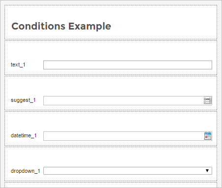
This Dynaform contains the following controls:
| Control Type | ID | Label | Variable Name |
|---|---|---|---|
| Textbox | textVar | text_1 | textVar |
| Suggest Box | suggestVar | suggest_1 | suggestVar |
| Datetime | datetimeVar | datetime_1 | datetimeVar |
| Dropdown | dropdownVar | dropdown_1 | dropdownVar |
Then, create a trigger by going to the MainToolbox. Locate the Trigger option, hover the pointer of the mouser over the plus (+) sign and click on the Create button.
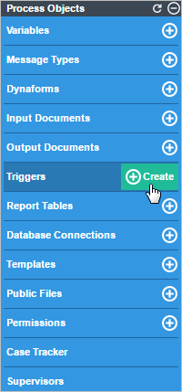
In the Create Custom Trigger window, place the following code inside the Code box.
Click on the Save button to store the trigger.
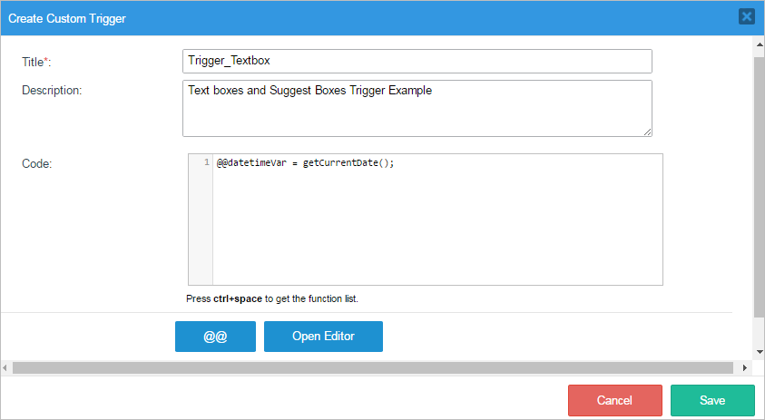
Add the Dynaform and the trigger as a step into one of the tasks by right clicking on the task and selecting Steps.
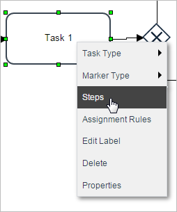
Drag and drop the trigger where it needs to go (depending on the user's necessity). And then click on the Condition button as seen in the image below.
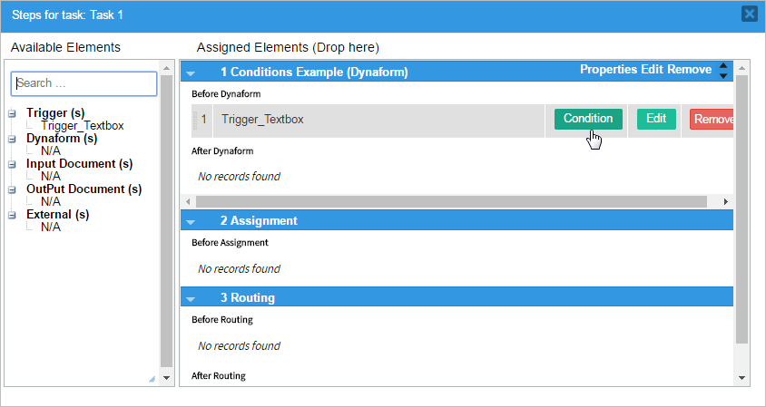
The Condition Trigger window will be displayed and the condition code can be added.
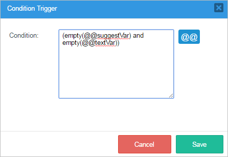
When the case runs the trigger will be executed successfully as seen in the image below. If the text_1 (variable: @@textVar) and suggest_1 (variable: @@suggestVar) fields are empty then the current time will be shown in the datetime_1 field.
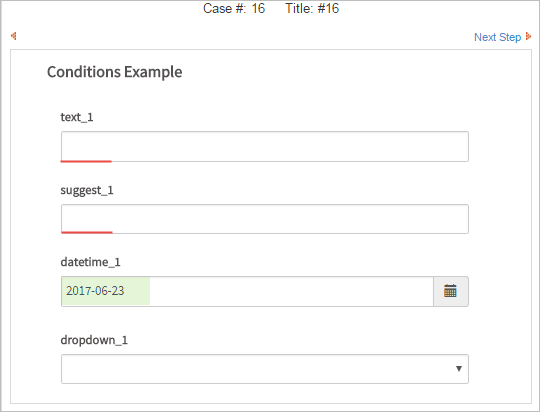
Textareas
Available Version: 3.0.1.x
Reference textareas as @@field_name in conditions. Textareas can have multiple lines of input. Therefore the condition can use the strlen() function to count the number of characters and/or the count() and explode() functions to find the number of hard returns in the string. The conditions can either be:
or
As an example use the first condition as seen in the image below:
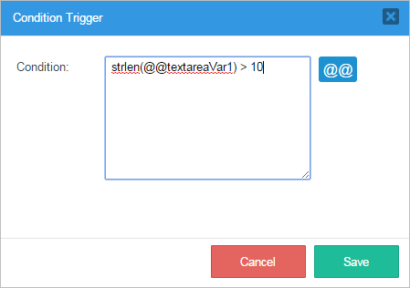
The condition dictates that if the text introduced in the textarea_1 control (variable: @@textareaVar1) has a length of more than 10 characters, then the trigger created in the Textboxes and Suggest boxes example will be fired. Remember that this trigger shows the current date in the datetime_1 control.
But if the textarea_1 control has less than 10 characters then the "datetime_1" control will not show anything. Observe the images below:
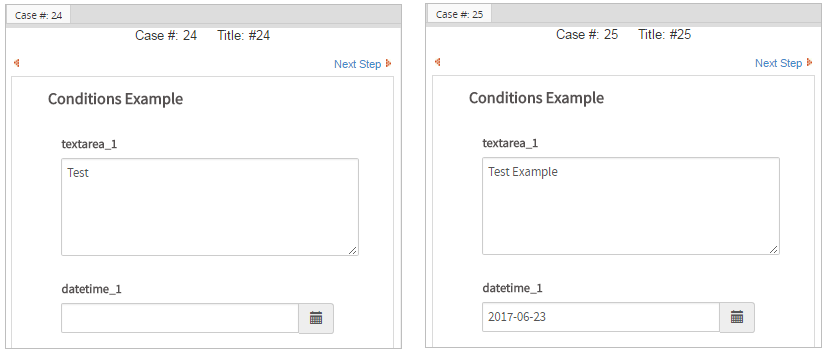
Datetime
Available Version: 3.0.1.x
Dates are stored as strings in the format "YYYY-MM-DD", such as "1999-01-01" or "2010-12-31". If the option to include the time is activated, then it has the format "YYYY-MM-DD HH:MM:SS", such as "1999-01-01 01:01:01" or "2010-12-31 23:59:59". This format is standardized for all dates from version 1.2-3306Beta and later.
For earlier versions of ProcessMaker, the order of the elements in the string depends upon the mask used by the date field. The default mask "Y-m-d" will generate strings in the same "YYYY-MM-DD" format, but a mask like "m-d-y" will generate dates in the "DD-MM-YY", which won't be understood correctly by PHP or MySQL. If using dates in conditions prior to version 1.2-3306Beta, it is recommended to only use one of the date formats understood by PHP.
Because dates are stored as strings, they should be accessed as @@field_name. For simple comparisons, dates in standard "YYYY-MM-DD" format can be compared as strings.
@@DueDate < getCurrentDate()
However, advanced comparisons require that dates be converted to PHP timestamps with PHP's strtotime() function. For example, if only a DynaForm wants to be displayed and more than 10 days past the due date:
If wanting to make a calculation between date it is advisable to use the DateTime::add function.
Checkboxes
Available Version: 3.0.1.x
By default checkbox fields are stored as arrays with values of:
| Array ( [0] => 1 ) | If checked |
| Array ( [0] => 0 ) | If unchecked |
Therefore, a condition to verify if a control named "checkboxVar1" was checked will look like:
For example, add the condition shown above to the trigger created in the Textboxes and Suggest boxes example, so the checkbox must be checked to fire the trigger.
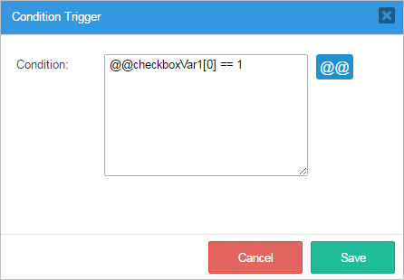
So when running a case if the checkbox control has been clicked before, as seen in the image below.
The condition will fire the trigger that sets the current date on the datetime control.
Dropdown boxes and Radiogroups
Available Version: 3.0.1.x
Note: Take into consideration than 3.0.x these controls are known as Dropdowns and Radio(group) controls.
These controls store the value (not the label) of the selected option. Generally dropdown boxes and radiogroups are accessed as @@field_name, but if the values for the options are integers, they can be accessed as either @@field_name or @%field_name. Due to automatic type conversion, @%var == 2 or @@var == 2 mean the same thing and both would work. Examples:
@@ContactMethod != 'fax'
@%ExpenseType != 2
To check for the label (not the value) of the selected option in a dropdown box, then check the option Save label of selected value in variable when defining the dropdown box. Then reference it as @@field_name_label. Example:
For example, add the following condition on a trigger where one of the options in the dropdown would be the condition for the trigger to be executed.
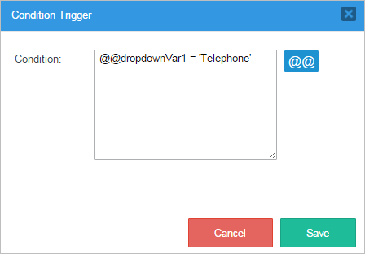
Choose the option added in the trigger.

And the trigger, which will show the current date, will be executed.

Checkgroups
Like dropdown boxes, checkgroups store the value (not the label) of the selected option as a string. Unlike dropdown boxes which require one selected option, checkgroups allow zero, one, or multiple options to be selected. If more than one option is selected, then each value is separated by a “|” (vertical bar) in a string, such as “blue|yellow|pink” or “0|4|5”.
To deal with situations where more than two options might be selected, it is recommended to break the selected values into an array using the explode() function and then search for a value in the array using the in_array() function.
For instance, to search whether the option "telephone" was selected in the "ContactMethods" listbox:
To search whether the option "telephone" was NOT selected, then use ! (Logical NOT):
If the values in a listbox or checkgroup are numbers, use the same method to search for the values as strings:
To search for multiple values, then the first parameter of in_array() should be an array of the values to be found:
Use count() to count the number of selected options. For example, to check whether more than one option was selected:
Files
Available Version: 3.0.x
File fields store the filename of the uploaded file as a string. For example, the following condition can be used to check whether a file was uploaded with the empty() function or whether the file extension is not a "doc" type:
For example, if the condition added in a trigger is the one seen in the image below using the empty() function.

Then, the response would be if the "File" control is empty then the trigger, which shows the current date, will be executed as seen in the image below.
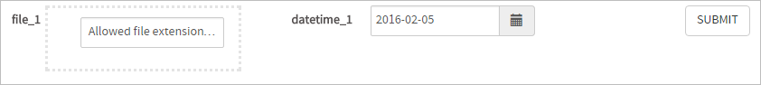
Grids
A grid is stored in a case variable as an array of associative arrays, so it has to be referenced as @=field_name, where it is the field name for the grid object in a master form. The counting of the array starts from the number 1 (not 0 like a normal array). Each row is stored as an associative array where the grid field names are the keys and the entered data are the values.
Check how many rows are in a grid by using the count() function. For example, to checking whether the "Products" grid has more than 3 rows:
It is not a good idea to reference a particular grid row in a condition, because an error will be generated if the row doesn't exist. Instead, wrap the condition inside a ternary operator, which first checks whether the row exists.
For example, if checking whether the "Price" field in the first row in the "Products" grid is greater than 100, first check if the row exists with the count() function. Only if it does exist, then check the value of the first "Price" field, otherwise return false.
If unsure whether the grid form was submitted, it is a good idea to first check whether the grid case variable exists with isset(). For example, to check whether the "imported" Yes/No box in the first row of the "Products" grid has selected "Yes" (which has a value of 1):
The condition first checks whether the grid exists, then it checks whether there is at least one row in the grid and finally checks whether the "Yes" option was selected in the Yes/No box (Yes is 1, No is 0).
To check whether any of the "Price" fields in any of the rows is greater than 100, it is recommended to fire a trigger before the condition which would pass through all the rows in the grid and assign a value to a case variable which could be checked in the condition. For example, use the following trigger:
foreach (@=Products as row)
{
if (row['Price'] > 100)
@=Over100 = true;
}
Then use the following condition:
Setting Conditions
Conditions can be set for a number of different elements in ProcessMaker.
Conditions for Triggers
Setting a condition for a Trigger is similar to setting one for other types of steps. First, assign the trigger to fire at a particular point in a task. Then right click on the task in the process map and select the "Steps" option from the dropdown menu.
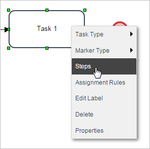
When the "Steps" window is opened add a trigger as a step. Then click on the "Condition" button.

When the "Condition Trigger" window is opened observe that there is a section where a condition for the execution of the trigger can be added. This condition will work as an IF for the trigger's execution. Notice also that case and system variables can be added by clicking on the "@@" button.
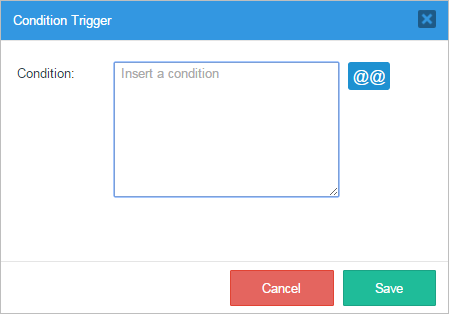
This is the "Process Variables" window where case variables and system variables can be found and added to the condition therefore adding coherence to the process.
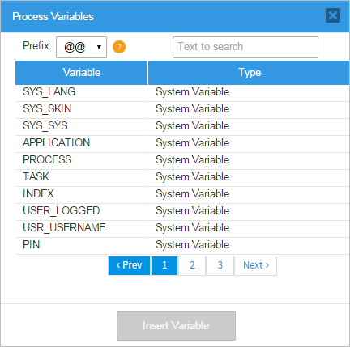
After a condition has been added to a trigger, the "Condition" button will automatically have an asterisk next to it. Letting the user know that the trigger has a previous condition before it fires.

Conditions in Evaluation Routing Rules
Evaluation routing rules can use conditions to decide whether to decide the execution of a particular paths in a process.
A condition can be set for each path. If the condition evaluates to True then the next task will be executed. If False then the next task (and any subsequent tasks on the same path) will not be executed. If the condition on a routing rule is left blank, then the condition will be considered True and the next task in the path will be executed.
Add a condition to a gateway by right clicking on it and then select the "properties" option.
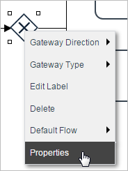
A new window will open where the "Routing Rule" of the gateway can be set by the conditions.

Set the conditions for the process under the "Condition" section. Make sure that at least one of the conditions will be true, otherwise an error will be thrown and the process will stop at that point. Also remember that the "Routing Rules" of a process can be prioritized, read this documentation for more information.
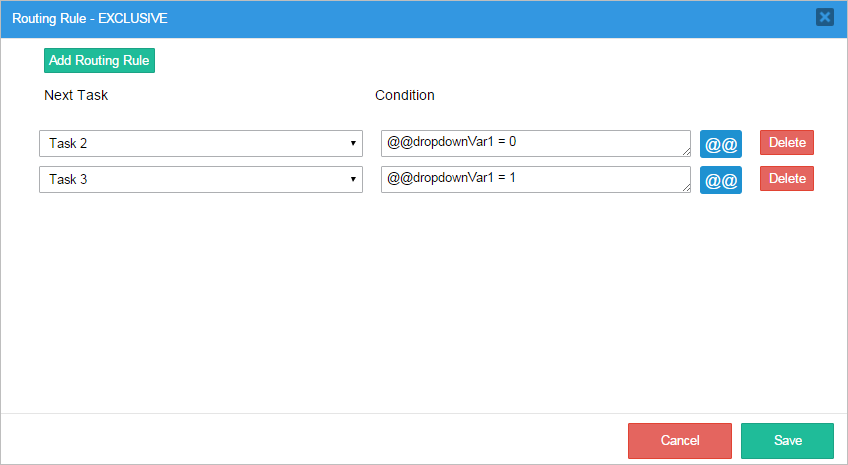
Conditions for ProcessMaker Mobile
To restrict the execution of Triggers or Steps according to the environment where the case is being run, it is possible to set the following conditions.
Restrict a Trigger or Step to work only with ProcessMaker Mobile, assign the following condition:
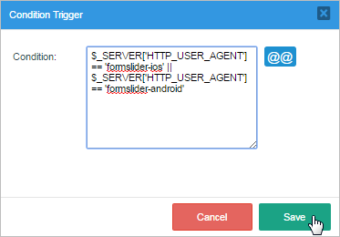
Otherwise, restrict a Trigger or Step to work only with ProcessMaker Desktop Version, then assign the following condition::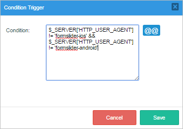
Errors in Conditions
It can be difficult to debug problems in conditions, so it is recommended to run cases with the Debugger activated. As a case progresses, examine the values of the case and system variables used in the conditions and verify that the conditions are testing for the right values in the variables.
If an error occurs in the syntax of a condition, then an error message will appear to indicate the problem while running cases.
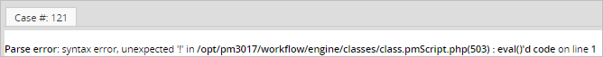
If ProcessMaker encounters a case variable when evaluating a condition, which doesn't exist or hasn't yet been defined in the process, then it gives no indication of the problem. Instead, it inserts a value of "" (an empty string) in place of the variable and evaluates the expression. This kind of problem can be very hard to debug, because the case continues to run without giving any indication of a problem.
If all of the conditions for an exclusive or inclusive gateway evaluate to false and there is no available default flow, then the process stops and the following error message appears:
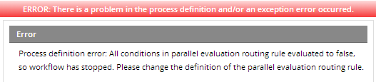
Fix the conditions so at least one of them will always evaluate to true.
Common Condition Problems
These are some common problems when designing conditions:
- Misspelled variable names. Remember that variable names are case sensitive and must be spelled exactly as defined (either in the field names in DynaForms or as case variables in Triggers).
- Using a case variable in a condition before it has been created in the process. Do not use a case variable in a condition, if it is created in a later DynaForm field or defined in a later trigger.
- Using a case variable in a condition from a DynaForm field whose data may not have been submitted. By default, clicking on the Next Step link in a DynaForm will not save the data, so no case variables will be created for each DynaForm field. To fix this problem, set the Next Step Link property for DynaForms to the "Save & Continue" option, so the data will automatically be saved when the user clicks on the Next Step link. If the user should have the choice to whether to save the DynaForm data or not, then fire a trigger after the DynaForm which will create case variables for each of the fields that are used in subsequent conditions. The trigger code would be:
- When comparing strings, remember to use the same case and the same spacing. "HeLlO" does not equal "hello" and " hello " does not equal "hello" If comparing text entered by the user, it is a good idea to eliminate surrounding spaces with the trim() command and convert all input to either upper or lowercase with strtoupper() or strtolower(). For example:
If searching within text entered by the user, consider using preg_match(). For example:
- In PHP, = is used for assignment, whereas == or === is used for equality. The condition @%ExpenseType = 3 will always evaluate to true, because the integer 3 can be assigned correctly to the variable. Instead, use the condition @%ExpenseType == 3 to check if @%ExpenseType is equal to the integer 3.